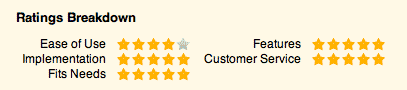
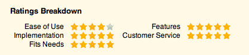
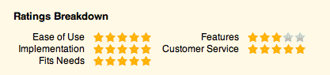
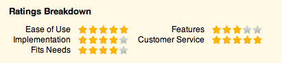
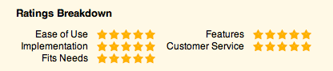

CurrencyXchanger has been a true asset to the business and has allowed us to streamline compliance, reporting, stock management and data collection in a way that suits our retail environment. None of these goals would have been possible to achieve without the ongoing support and training from Tiran and Houman, which resulted in an overwhelming task becoming a smooth roll-out in the business. We are looking forward exploring the system further as it has become a true asset to our business.
Cassy Pearson, Managing director
Exchange Now, Australia
Rated and reviewed on
capterra.com
CurrencyXchanger has all the features that we need from a POS software. Its flexibility and ease of use are second to none. The training videos also made it very easy for us to use the software immediately. Last but not the least, the support/training staff especially Houman is world class. CurrencyXchanger is one of the best purchase decisions we've made for our business.
Saul Mendoza, Director
Currency Exchange One LLC, CA, USA
Rated and reviewed on
capterra.com
This is the best and most professional software I've come across compared to my previous 4 software [that i used] for the last eighteen years. The outlook and the order are really nice. I love it. They even have training recorded on YouTube which you can always go there and view. The people are friendly and really there to help you. Professional and the right people to help your company grow. I highly recommend this software.
Alan Liau, manager
Manager at Traveller's Money Changer Sdn Bhd, Malaysia
Rated and reviewed on
capterra.com
After using a multi-million dollar custom-designed Point-Of-Sale system for many years, I anticipated it would be very difficult to find a replacement, until I came across Clear View's CurrencyXchanger.
Kim Hospodar, Financial Service Lead
Altour / American Express

Rated by Bineta Dieng on
capterra.com
I like the system very much. We had two other systems prior to this one. I like that support is available whenever I call. No complaints. I certainly recommend this system!
Bineta Dieng, Customer Service Rep.
Omnex Group Inc., NJ, USA

Rated by Carlo Ponte on
capterra.com
We have been using CurrencyXchanger since January 2008. It was sluggish to get familiar with the different functions at first, but once they are learned and understood, it became very easy to use. Functions are extremely user-friendly once you get to apply them in a business environment. The system is also very flexible and can be adapted to any type of currency exchange business. Before purchasing this product we examined various other products on the market but none had the flexibility of this one. Also the friendly customer support is a major plus
Carlo Ponte, Marketing Manager
Globex 2000, QC, Canada

Rated by Maryann Zanca on
capterra.com
I like the system. It's a good system and much more stable than the system we used to have by American Express... and I'm grateful for the fact that it's stable and we don't have to constantly call for support.
Maryann Zanca
Financial Service Rep., Orange County, CA, USA.

Rated by Richard Szczepaniak on
capterra.com
The system is wonderful in terms of ease of use. All financial sales representatives love it and prefer it over Express Change.
Richard Szczepaniak, Manager Financial Services
Altour International / American Express, NJ, USA

Rated by Michael Xiang on
capterra.com
What I like the most are the compliance features, I easily passed my last FINTRAC audit because of this software.
Michael Xiang, President
Happy Currency, BC, Canada
CurrencyXchanger in now an integral part of our business. We are already whitnessing how your software is contributing to our growth and success.
H. Attar, President
Attar Enterprise Inc., BC, Canada
CurrencyXchanger a été un véritable atout pour l'entreprise et nous a permis de rationaliser la conformité, les rapports, la gestion des stocks et la collecte de données d'une manière qui convient à notre environnement de vente au détail. Aucun de ces objectifs n'aurait été possible sans le soutien et la formation continus de Tiran et Houman, ce qui a permis à une tâche écrasante de devenir un déploiement en douceur dans l'entreprise. Nous sommes impatients d'explorer davantage le système car il est devenu un véritable atout pour notre entreprise.
Cassy Pearson, Directrice générale
Exchange Now, Australie
Notée et commentée sur
capterra.com
CurrencyXchanger possède toutes les fonctionnalités dont nous avons besoin d'un logiciel de point de vente. Sa flexibilité et sa facilité d'utilisation sont inégalées. Les vidéos de formation nous ont également facilité l'utilisation immédiate du logiciel. Dernier point mais non le moindre, le personnel de soutien/formation, en particulier Houman, est de classe mondiale. CurrencyXchanger est l'une des meilleures décisions d'achat que nous ayons prises pour notre entreprise.
Saul Mendoza, directeur
Currency Exchange One LLC, CA, États-Unis
Noté et commenté sur
capterra.com
C'est le logiciel le meilleur et le plus professionnel que j'ai rencontré par rapport à mes 4 logiciels précédents [que j'ai utilisés] au cours des dix-huit dernières années. Les perspectives et l'ordre sont vraiment sympas. Je l'aime. Ils ont même une formation enregistrée sur YouTube que vous pouvez toujours y aller et voir. Les gens sont sympathiques et vraiment là pour vous aider. Des professionnels et les bonnes personnes pour aider votre entreprise à se développer. Je recommande vivement ce logiciel.
Alan Liau, manager
Manager chez Traveller's Money Changer Sdn Bhd, Malaisie
Noté et commenté sur
capterra.com
Après avoir utilisé un système de point de vente personnalisé de plusieurs millions de dollars pendant de nombreuses années, je prévoyais qu'il serait très difficile de trouver un remplaçant, jusqu'à ce que je tombe sur CurrencyXchanger de Clear View.
Kim Hospodar, responsable des services financiers
Altour / American Express
Noté par Bineta Dieng sur
capterra.com
J'aime beaucoup le système. Nous avions deux autres systèmes avant celui-ci. J'aime que l'assistance soit disponible chaque fois que j'appelle. Aucune plainte. Je recommande certainement ce système!
Bineta Dieng, représentante du service client.
Omnex Group Inc., NJ, États-Unis
Noté par Carlo Ponte sur
capterra.com
Nous utilisons CurrencyXchanger depuis janvier 2008. C'était lent de se familiariser avec les différentes fonctions au début, mais une fois qu'elles sont apprises et comprises, c'est devenu très facile à utiliser. Les fonctions sont extrêmement conviviales une fois que vous les appliquez dans un environnement professionnel. Le système est également très flexible et peut être adapté à tout type d'activité de change. Avant d'acheter ce produit, nous avons examiné divers autres produits sur le marché, mais aucun n'avait la flexibilité de celui-ci. De plus, le support client amical est un atout majeur
Carlo Ponte, directeur du marketing
Globex 2000, QC, Canada
Noté par Maryann Zanca sur
capterra.com
J'aime le système. C'est un bon système et beaucoup plus stable que le système que nous avions par American Express... et je suis reconnaissant du fait qu'il soit stable et que nous n'ayons pas à appeler constamment l'assistance.
Maryann Zanca
Représentante des services financiers, Orange County, Californie, États-Unis.
Noté par Richard Szczepaniak sur
capterra.com
Le système est merveilleux en termes de facilité d'utilisation. Tous les commerciaux financiers l'adorent et le préfèrent à Express Change.
Richard Szczepaniak, directeur des services financiers
Altour International / American Express, NJ, États-Unis
Noté par Michael Xiang sur
capterra.com
Ce que j'aime le plus, ce sont les fonctionnalités de conformité, j'ai facilement passé ma dernière vérification CANAFE grâce à ce logiciel.
Michael Xiang, président
Happy Currency, C.-B., Canada
CurrencyXchanger fait désormais partie intégrante de notre activité. Nous constatons déjà comment votre logiciel contribue à notre croissance et à notre succès.
H. Attar, président
Attar Enterprise Inc., C.-B., Canada
CurrencyXchanger ha sido un verdadero activo para el negocio y nos ha permitido agilizar el cumplimiento, los informes, la gestión de existencias y la recopilación de datos de una manera que se adapta a nuestro entorno minorista. Ninguno de estos objetivos habría sido posible de lograr sin el apoyo y la capacitación continuos de Tiran y Houman, lo que resultó en una tarea abrumadora que se convirtió en una implementación fluida en el negocio. Esperamos seguir explorando el sistema, ya que se ha convertido en un verdadero activo para nuestro negocio.
Cassy Pearson, directora ejecutiva
de Exchange Now, Australia
Calificación y reseñas en
capterra.com
CurrencyXchanger tiene todas las características que necesitamos de un software POS. Su flexibilidad y facilidad de uso son insuperables. Los videos de capacitación también nos facilitaron mucho el uso inmediato del software. Por último, pero no menos importante, el personal de apoyo/capacitación, especialmente Houman, es de clase mundial. CurrencyXchanger es una de las mejores decisiones de compra que hemos tomado para nuestro negocio.
Saul Mendoza, Director
Currency Exchange One LLC, CA, EE. UU.
Calificación y reseñas en
capterra.com
Este es el mejor y más profesional software que he encontrado en comparación con mis 4 software anteriores [que usé] durante los últimos dieciocho años. La perspectiva y el orden son realmente agradables. Me encanta. Incluso tienen entrenamiento grabado en YouTube que siempre puedes ir allí y ver. La gente es amable y realmente está ahí para ayudarte. Profesionales y las personas adecuadas para ayudar a su empresa a crecer. Recomiendo encarecidamente este software.
Alan Liau, gerente
Gerente en Traveller's Money Changer Sdn Bhd, Malasia
Calificación y reseñas en
capterra.com
Después de usar un sistema de punto de venta de diseño personalizado multimillonario durante muchos años, anticipé que sería muy difícil encontrar un reemplazo, hasta que me encontré con el CurrencyXchanger de Clear View.
Kim Hospodar, Líder de Servicios Financieros
Altour / American Express
Calificado por Bineta Dieng en
capterra.com
Me gusta mucho el sistema. Teníamos otros dos sistemas antes de este. Me gusta que el soporte esté disponible cada vez que llamo. Sin quejas. ¡Ciertamente recomiendo este sistema!
Bineta Dieng, Representante de servicio al cliente.
Omnex Group Inc., NJ, EE. UU.
Calificado por Carlo Ponte en
capterra.com
Hemos estado usando CurrencyXchanger desde enero de 2008. Al principio fue lento familiarizarse con las diferentes funciones, pero una vez que se aprendieron y entendieron, se volvió muy fácil de usar. Las funciones son extremadamente fáciles de usar una vez que las aplica en un entorno empresarial. El sistema también es muy flexible y se puede adaptar a cualquier tipo de negocio de cambio de moneda. Antes de comprar este producto, examinamos varios otros productos en el mercado, pero ninguno tenía la flexibilidad de este. Además, la atención al cliente amigable es una gran ventaja.
Carlo Ponte, director de marketing
Globex 2000, QC, Canadá
Calificado por Maryann Zanca en
capterra.com
Me gusta el sistema. Es un buen sistema y mucho más estable que el sistema que solíamos tener con American Express... y estoy agradecido por el hecho de que es estable y no tenemos que llamar constantemente para pedir soporte.
Maryann Zanca
Representante de Servicios Financieros, Condado de Orange, CA, EE. UU.
Calificado por Richard Szczepaniak en
capterra.com
El sistema es maravilloso en términos de facilidad de uso. A todos los representantes de ventas financieras les encanta y lo prefieren a Express Change.
Richard Szczepaniak, Gerente de Servicios Financieros
Altour International / American Express, NJ, EE. UU.
Calificado por Michael Xiang en
capterra.com
Lo que más me gusta son las características de cumplimiento, pasé fácilmente mi última auditoría FINTRAC gracias a este software.
Michael Xiang, presidente de
Happy Currency, BC, Canadá
CurrencyXchanger ahora es una parte integral de nuestro negocio. Ya estamos siendo testigos de cómo su software está contribuyendo a nuestro crecimiento y éxito.
H. Attar, Presidente
Attar Enterprise Inc., BC, Canadá
CurrencyXchanger war ein echter Gewinn für das Unternehmen und hat es uns ermöglicht, Compliance, Berichterstattung, Bestandsverwaltung und Datenerfassung auf eine Weise zu rationalisieren, die zu unserer Einzelhandelsumgebung passt. Keines dieser Ziele wäre ohne die kontinuierliche Unterstützung und Schulung von Tiran und Houman zu erreichen gewesen, was dazu führte, dass eine überwältigende Aufgabe zu einer reibungslosen Einführung im Unternehmen wurde. Wir freuen uns darauf, das System weiter zu erforschen, da es zu einem echten Gewinn für unser Unternehmen geworden ist.
Cassy Pearson, Managing Director
Exchange Now, Australien
Bewertet und überprüft auf
capterra.com
CurrencyXchanger hat alle Funktionen, die wir von einer POS-Software benötigen. Seine Flexibilität und Benutzerfreundlichkeit sind unübertroffen. Die Schulungsvideos haben es uns auch sehr leicht gemacht, die Software sofort zu nutzen. Last but not least ist das Support-/Schulungspersonal, insbesondere Houman, Weltklasse. CurrencyXchanger ist eine der besten Kaufentscheidungen, die wir für unser Unternehmen getroffen haben.
Saul Mendoza, Director
Currency Exchange One LLC, CA, USA
Bewertet und geprüft auf
capterra.com
Dies ist die beste und professionellste Software, die mir im Vergleich zu meinen vorherigen 4 Softwareprogrammen [die ich verwendet habe] in den letzten achtzehn Jahren begegnet ist. Die Aussicht und die Reihenfolge sind wirklich schön. Ich liebe es. Sie haben sogar Trainingsaufzeichnungen auf YouTube, die Sie jederzeit dort ansehen können. Die Leute sind freundlich und wirklich da, um Ihnen zu helfen. Professionelle und die richtigen Leute, um Ihr Unternehmen wachsen zu lassen. Ich kann diese Software nur wärmstens empfehlen.
Alan Liau, Manager
Manager bei Traveller's Money Changer Sdn Bhd, Malaysia
Bewertet und bewertet auf
capterra.com
Nachdem ich viele Jahre lang ein individuell gestaltetes Point-of-Sale-System im Wert von mehreren Millionen Dollar verwendet hatte, rechnete ich damit, dass es sehr schwierig sein würde, einen Ersatz zu finden, bis ich auf den CurrencyXchanger von Clear View stieß.
Kim Hospodar, Finanzdienstleistungsleiter
Altour / American Express
Bewertet von Bineta Dieng auf
capterra.com
Das System gefällt mir sehr gut. Vorher hatten wir noch zwei andere Systeme. Mir gefällt, dass der Support verfügbar ist, wann immer ich anrufe. Keine Beschwerden. Ich kann dieses System auf jeden Fall empfehlen!
Bineta Dieng, Kundendienstmitarbeiterin
Omnex Group Inc., NJ, USA
Bewertet von Carlo Ponte auf
capterra.com
Wir verwenden CurrencyXchanger seit Januar 2008. Anfangs war es schleppend, sich mit den verschiedenen Funktionen vertraut zu machen, aber sobald sie erlernt und verstanden wurden, wurde es sehr einfach zu bedienen. Die Funktionen sind äußerst benutzerfreundlich, sobald Sie sie in einer Geschäftsumgebung anwenden können. Das System ist außerdem sehr flexibel und kann an jede Art von Wechselgeschäft angepasst werden. Vor dem Kauf dieses Produkts haben wir verschiedene andere Produkte auf dem Markt untersucht, aber keines hatte die Flexibilität dieses Produkts. Auch der freundliche Kundensupport ist ein großes Plus
Carlo Ponte, Marketingleiter
Globex 2000, QC, Kanada
Bewertet von Maryann Zanca auf
capterra.com
Ich mag das System. Es ist ein gutes System und viel stabiler als das System, das wir früher von American Express hatten ... und ich bin dankbar dafür, dass es stabil ist und wir nicht ständig nach Support rufen müssen.
Maryann Zanca
Financial Service Rep., Orange County, Kalifornien, USA.
Bewertet von Richard Szczepaniak auf
capterra.com
Das System ist wunderbar in Bezug auf die Benutzerfreundlichkeit. Alle Vertriebsmitarbeiter im Finanzbereich lieben es und ziehen es Express Change vor.
Richard Szczepaniak, Manager Financial Services
Altour International / American Express, NJ, USA
Bewertet von Michael Xiang auf
capterra.com
Was mir am besten gefällt, sind die Compliance-Funktionen, ich habe mein letztes FINTRAC-Audit wegen dieser Software problemlos bestanden.
Michael Xiang, Präsident von
Happy Currency, BC, Kanadada
CurrencyXchanger ist jetzt ein fester Bestandteil unseres Geschäfts. Wir erleben bereits, wie Ihre Software zu unserem Wachstum und Erfolg beiträgt.
H. Attar, Präsident
Attar Enterprise Inc., BC, Kanada